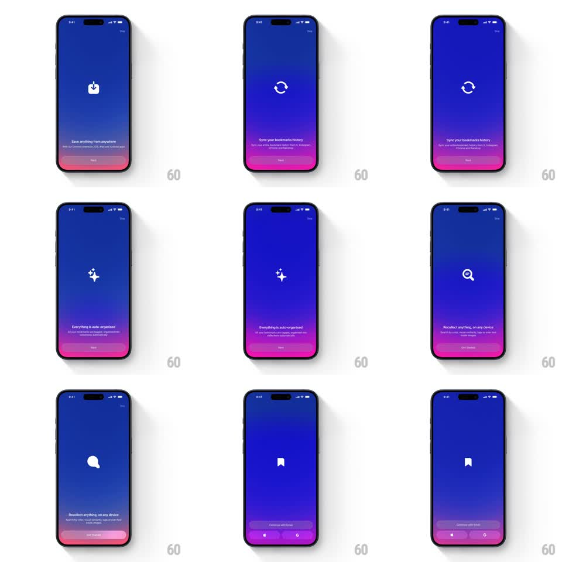

Media
Frame-by-frame

Rebuild this animation 1:1: Recollect's onboarding icon morph - on a purple gradient, a single white glyph fluidly morphs through each step's symbol (bookmark, sync arrows, sparkles, search, bubble) as the feature copy and CTA cycle below.

Rebuild this animation 1:1: Recollect's onboarding icon morph - on a purple gradient, a single white glyph fluidly morphs through each step's symbol (bookmark, sync arrows, sparkles, search, bubble) as the feature copy and CTA cycle below. ## Integration Integration: stack-agnostic spec - springs given as stiffness/damping, timed motions as duration + curve; map every value to your framework and animation library of choice. ## Scene Onboarding pager on a deep purple-to-magenta vertical gradient. Center: one white icon (~64px). Bottom: step headline + subcopy, pagination dots, and a filled Next button (final step: Get Started, then Continue with Email plus Apple/Google buttons). Skip link top-right. ## Motion spec Pattern: pager-driven icon morph - one shape continuously re-forms into the next. - On page change, the current icon morphs into the next via path interpolation (450ms, ease-in-out) - the bookmark's outline opens into the sync circle, arrows fold into sparkles, and so on; it never crossfades or unmounts. - A subtle overshoot wobble lands the new shape (scale 1 -> 1.08 -> 1, spring ~300/18, 250ms tail). - Headline and subcopy crossfade with a small upward drift (exit -8px, enter +8px, 250ms). - The active pagination dot slides and fills (200ms); the CTA label swaps Next -> Get Started on the last step. - Gradient hue shifts slightly per step (+/- 5% lightness, 500ms). ## Calibration - The morph is the identity: shared stroke weight across all glyphs so the interpolation reads as one object. - Wobble tail is small; the icon should feel gel, not rubber. ## Reduced motion Icon crossfades between glyphs (200ms); text changes without drift. ## Don't miss - One continuous icon element across the whole pager. - Final page replaces the pager dots with the two sign-in buttons - the dots don't linger.